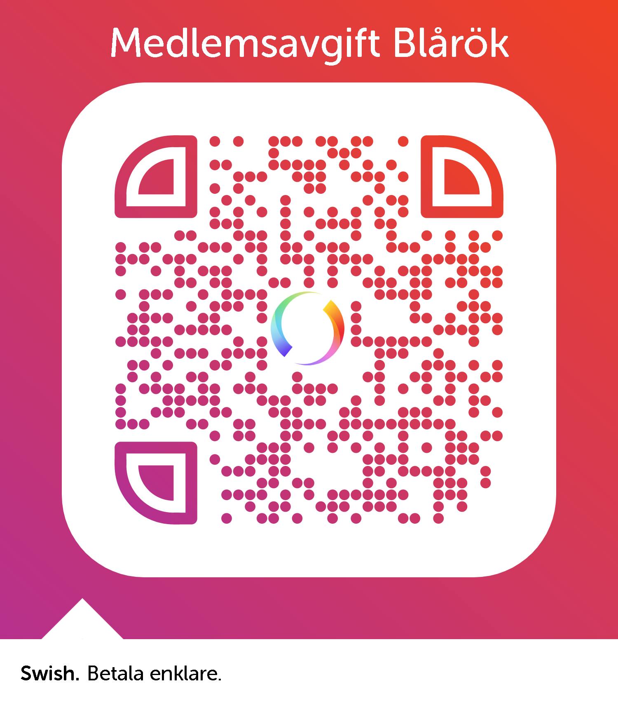

Blårök Åtvidaberg är en veteranmopedklubb som har veteranmopeder och framför allt veteranmopedrallyn som ledstjärna. Klubben har sina rötter i Björsäter, ca 2 mil norr om Åtvidaberg. År 2003 lades Blårök Björsäter ner och klubben lades på is för att sedan åter startas upp i Åtvidaberg den 1 Augusti 2004. Klubben återuppfördes av Stig Ahlström, Åtvidaberg och Rolf Hansson, Linköping. Blårök har idag ca 150 medlemmar och verkar i Åtvidaberg och omnejd. Vanligtvis bedrivs två mopedrallyn varav ett på våren och det andra på sensommaren.
Tveka inte, kontakta oss för medlemskap!
Som medlem i klubben förväntas man följa de stadgar som föreningen fastställt. De mest engagerade söker sig till styrelsen och väljs in på olika poster enligt standardrutin. Medlemskapet kostar 150kr/år och skall betalas in vid årsskiftet till bg: 380-8029 eller Swish: 1234736302.
Vill du ha festlig fika när du gästar våra rallyn? Svaret är givet och här har du noblessgruppen som kommer att göra dig mycket nöjd.
Vår klubblokal är belägen i Smedstorp, någon kilometer utanför Åtvidaberg.
Lokalen består av ett gammalt torp med tillhörande lantbruksbyggnader. Vi har mycket goda möjligheter att anordna roligheter inom föreningen, bara fantasin sätter gränser!
Det är förbjudet att parkera med större fordon än moped på innergårdens gräsmatta. Besökare med större fordon hänvisas till vår nygjorda parkering vid hörnet av ladugården.